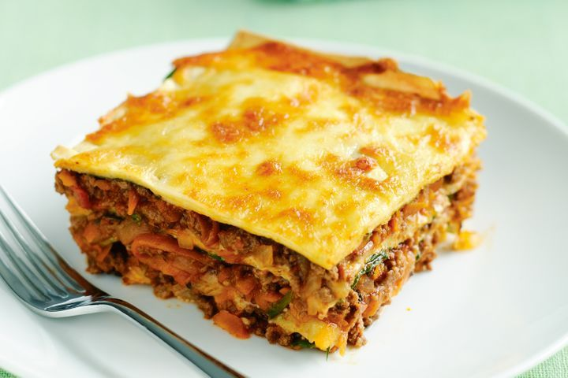

Lasagne

Description
A warm and soothing dish made out of a meat sauce, bechamel, parmesan and
pasta sheets
Great choice for a family lunch
Needs to be made a day in advance
Ingredients
- Pasta sheets
- Bolognese sauce
- Bechamel sauce
- Parmesan
Recipe steps
- Soak the pasta sheets
- Lay down the Bechamel
- Lay down the Bolognese
- Grate a hefty amount of Parmesan
- Lay down the pasta sheets without overlapping
-
Repeat the steps 2-5 till the tray is full, then repeat 2-4 for the last
time
- Bake for 45 min at 160 degrees Celsius
- Cool it down overnight and portion the next day